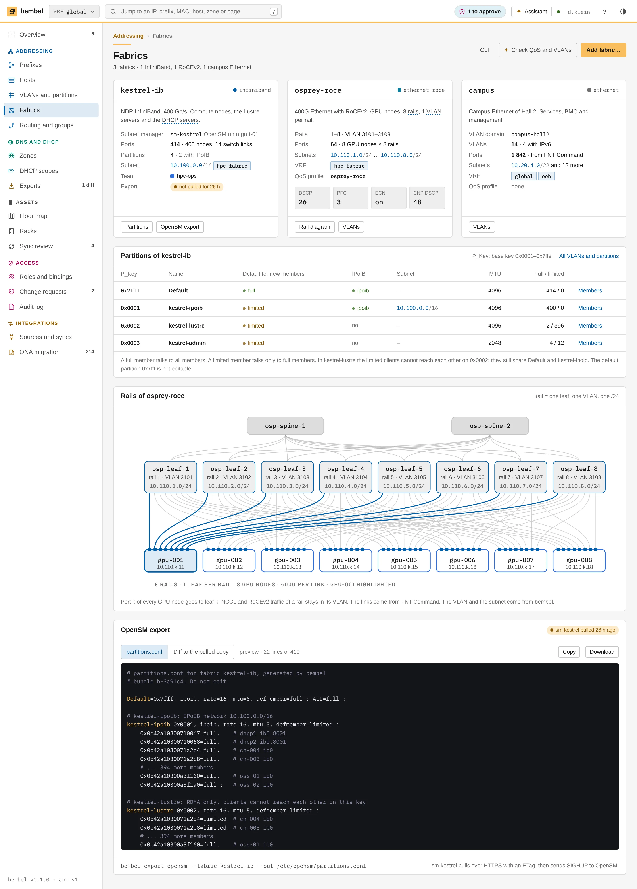
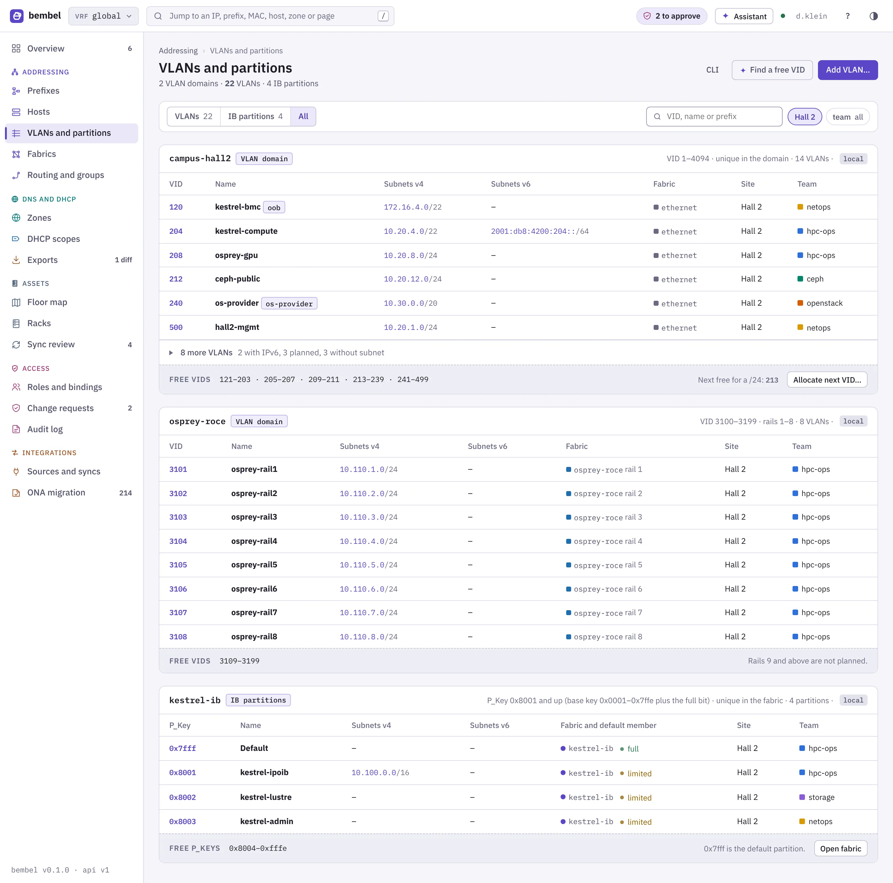

This chapter specifies the pages of the bembel web UI for the physical side and the network types: the floor map, the rack elevation, the device page, the sync review, the fabrics page and the VLANs page. Each page gets a screenshot, its purpose, layout, parts, states and its URL, API and CLI. The data model is in Assets and FNT Command and Fabrics.
dennisklein/rackplanner: a drawing sheet with graph paper, 20 px per U, yellow tape labels, device faces with coloured ears and a title block.fnt. bembel adds the IP, DNS and DHCP state on top, as a small dot and a chip on each device face.All six pages follow one rule. A field has one owner. The page shows the owner with a badge and a lock. The user never edits a field of FNT Command in bembel.
| Part of a page | Comes from | Shown as |
|---|---|---|
| Floor, row, rack, position, model, serial, asset tag, ELID, port, MAC, cable peer | FNT Command | Value with the lock icon, or the badge fnt. No edit button. |
| Team, host, interface, address, VLAN, DNS state, DHCP state | bembel | Normal value. A link to the object. An edit button if the user has the permission. |
| Fabric, QoS profile, VLAN, IB partition | bembel | Normal value. The port links of a fabric come from FNT. |
| Dot and chip on a device face | bembel, joined by the asset link | Dot for the state, chip for the number of addresses. |
Every page has the same head. The crumbs show Assets, hall and floor. The line under the title shows the source badge and the time of the last sync ("fnt · synced 17:45"). The CLI toggle holds the commands of the page. The buttons Open in FNT open the same object in FNT Command in a new tab. bembel never writes to FNT.
Purpose: the floor map answers three questions for a hall. Which racks exist? Who uses them? How full are they? A user also finds the rack of a host here, and the free positions for new hardware.
| Part | Content | Why |
|---|---|---|
| Sheet | Walls, door, CRAC units, rows as rectangles. One square is 600 mm (one floor tile), a rack is 600 × 1200 mm. A thick strip marks the front of a rack. The cold aisle between two rows is hatched. | A user thinks in aisles. The top view shows which rows share a cold aisle and which rack is near a CRAC unit. |
| Rack | A rectangle with the name (A01) and the power in kW. The fill is the team colour. A click opens the elevation. | The team colour answers "whose rack" at a glance. The power shows the heat. |
| Free position | A dashed outline with the name of the position, for example A04. | FNT knows the positions of a row. A free position is a place for a rack. It is not a rack. |
| Planned row | Row C with a hatched fill and the note "planned in FNT, not built". | The prefix 10.20.16.0/22 of the story is planned for this row. The user sees why the prefix exists. |
| Overlay: Team | Fill by the team of the most U in the rack: hpc-ops, openstack, ceph, storage, netops. | Default view. A rack with devices of two teams shows the larger share. |
| Overlay: IP status | Fill by the worst state of the devices in the rack: ok, stale or drift (amber), conflict (red). | The user finds the rack of a problem. In the story A01 has 2 stale addresses and A02 has 1 conflict. |
| Overlay: Power | Fill by the share of the rack budget: below 70 % ok, 70 to 90 % amber, above 90 % red. The budget is 12.0 kW per rack. | The same thresholds as the meter of a prefix. One rule for all fills. |
| Title block | Drawing, location, source and time of the sync, number of racks, view and scale. | The sheet is a drawing. It prints with its own context. The look is the one of rackplanner. |
| Rows table | One line per row: racks, space, power, teams, IP state. | The numbers of the whole floor in one place. Row names link to the elevation. |
| Row A card | 3 racks, 56 devices, 54 with a host. Space 86 of 141 U (61 %). Power 26.2 of 36.0 kW (73 %). Teams in the row. One line per rack with a bar. | The next action is in the card: Open elevation (the one filled button) and Open in FNT. |
| Source card | The state of the FNT source, the number of devices and the unmatched count with a link to the sync review. | A user who sees a rack without a host knows where to go. |
/assets/floor/{floor}[?overlay=team|ip|power&row=A]GET /v1/sites/{site}/tree?depth=row for the sheet, GET /v1/racks?floor={floor}&include=utilisation for kW and IP state, GET /v1/sources/fnt for the sync badgebembel site tree --site hall-2, bembel rack ls --floor ground, bembel sync fnt --statusasset.synced refreshes the sheet and the card. The sheet keeps the scroll position.
Purpose: the elevation shows what stands in a rack and whether its addresses are healthy. A user finds a device, reads its position and serial, and goes to its host. The drawing is the main work surface of the Assets area.
| Part | Content | Source |
|---|---|---|
| Tape label | The yellow label "Rack A01". At its right: "26/47 U · 9.1/12.0 kW". The text turns red above 90 % of the power budget (A02: 11.4 kW). | FNT (rack, U count, power); bembel (the budget setting) |
| Space bar and power bar | Two thin bars under the label. Dark is used U. Amber is power. | FNT |
| Device face | Ears and tint in the team colour. Four screws. The name in mono. The type line, for example "COMPUTE · 2U". Art by type: drive bays (compute, storage), fans (GPU nodes), port blocks (switches), dense bays (JBOD). | FNT (position, model); bembel (team) |
| State dot | Green: all addresses and DNS records ok. Amber: stale or drift (cn-007, cn-011, ceph-02). Red: conflict (gpu-006). Hollow grey: no host (gpu-009, gpu-010). | bembel |
| Chip | "3 IPs": the number of IPv4 addresses of the host. A host without an address shows "no IP". A device without a host shows "no host" with a dashed outline. | bembel |
| Side channel | 0U devices, drawn upright with the name turned by 90 degrees: the BMC switch sw-bmc-a01 and the PDU pdu-a01-a. | FNT |
| Selection | A dashed outline with four yellow handles around cn-004. The handles are marks. The drawing is not editable. | UI |
| Legend and title block | Teams with their U count, the four dot states, and the block "bembel · Hall 2 · Row A · 3 racks · synced from FNT Command 2026-11-04 17:45". | bembel |
The drawer for cn-004 has a head and two sections. The head shows the kind and height ("COMPUTE NODE · 2U"), the name, the badge fnt and the position.
SN7K4-0042, asset tag, position (Rack A01, U10–11, front), face, ELID, status and the time of the sync.cn-004.kestrel.example.org, the asset link ("matched by serial"), team, role, the interfaces with their MACs and addresses (eno1 with 10.20.4.44 and 2001:db8:4200:204::44, ib0 with 10.100.4.44 in hpc-fabric, bmc with 172.16.4.44 in oob), the DNS state and the DHCP reservation in dhcp-a./assets/racks/{rack} for one rack, /assets/rows/{row} for a row, with ?device=cn-004&face=front&overlay=ipGET /v1/racks?row=A, GET /v1/devices?rack=A01&include=host,state, GET /v1/devices/{id}bembel rack ls --row A, bembel rack show A01 --devices, bembel device show cn-004
Purpose: the device page joins the physical device with its host. It answers "which cable and which VLAN is behind this IP?" It is also the record of what the sync changed.
fnt, the lock and "managed by fnt". The buttons are Open host (filled), Open in FNT and Show in rack.| Part | Content | Source |
|---|---|---|
| Ports table | Three groups with a header line each: 8 × 400G RoCEv2 (rails 1 to 8, QoS profile in the header), 2 × 25G Ethernet (bond0), the BMC port. Columns: rail, port, speed, MAC, peer, VLAN, address, state. Example: rail 1 is nic1, 400G, b8:3f:d2:9a:01:01, peer osp-leaf-1 Eth1/1, VLAN 3101, address 10.110.1.11. | Port, MAC, speed and peer: FNT. VLAN and address: bembel. |
| FNT card | Model, serial SN7K9-0101, asset tag HPC-0101, position, location, ELID, status, sync time and revision. The link "Show FNT payload" opens the raw JSON. | FNT |
| Linked host card | The FQDN gpu-001.kestrel.example.org, kind, team hpc-ops, the match rule ("matched by serial"), the number of addresses, the DNS state and the DHCP reservation. The buttons are Open host and Change link… | bembel |
| Front face | The face of the device on a small sheet, with the same dot and chip as in the rack view. | FNT and bembel |
| History | One line per change that the sync made: asset tag set, NIC replaced (MAC of nic8 changed), moved from A03 to A02, first seen. Each line has the run id, the field names and a pill. | bembel (sync log) |
/assets/devices/{device}, for example /assets/devices/gpu-001GET /v1/devices/{id}, GET /v1/devices/{id}/ports, GET /v1/devices/{id}/history, GET /v1/asset-links?device={id}bembel device show gpu-001, bembel device ports gpu-001, bembel asset link show gpu-001
sr-20261104-1745 saw 2 311 devices. 14 changed. 4 devices have no host.Purpose: the page is the work list of the FNT sync. The sync never links a device when the result is not clear. A user decides here. The page also shows that the sync runs and how long it takes.
| Part | Content | Why |
|---|---|---|
| Unmatched row | At the left the device: name, rack, U, model, serial, tag, ELID. In the middle the four rule chips, the sentence about the rule that fired and the candidate host. At the right the buttons. | The user sees the cause and the proposal in one row. The rule chips show which rules ran and which one fired. |
| Rule: serial | gpu-009 and gpu-010: a host has the serial, but another name (gn-009, gn-010). Button Link. | The serial is the strongest key. The name differs because the ONA import used an old name. |
| Rule: MAC | pdu-a02-a: no serial, but the port mgmt has the MAC 00:1e:c9:5a:77:21 of the interface of pdu-a02a.oob.example.org. | A MAC is a good key for a device without a serial. The user still confirms. |
| No rule | pdu-a02-b: nothing found. The buttons are Create host… and Ignore. | Some devices need no host. Ignore removes the device from the list and keeps it in the mirror. |
| Conflict row | The FNT name and the bembel host name side by side: oss-02 and oss-2.kestrel.example.org. Buttons: Keep bembel name, Rename host… | FNT wins for physical fields. bembel wins for names, addresses and DNS. A difference is shown and never overwritten. |
| Runs table | Run id, kind (delta, full), start, duration, devices, changed, unmatched, conflicts, result. A retried run shows the pill "retried" and the reason. | A user sees that the sync is healthy, and sees a slow FNT. |
asset:link in the site of the device./assets/sync, tabs /assets/sync#unmatched, #conflicts, #runsGET /v1/sync-runs?source=fnt, GET /v1/devices?unmatched=true, GET /v1/asset-links/conflicts, POST /v1/asset-links, POST /v1/devices/{id}:ignore, POST /v1/sources/fnt:syncbembel sync fnt --status, bembel sync fnt --now, bembel asset unmatched --source fnt, bembel asset link gpu-009 --host gn-009.kestrel.example.orgsync.run.finished and asset.link.changed refresh the numbers and the lists.
Purpose: the page shows the network types of the site and the values that tools read from them: the QoS profile of RoCEv2, the IB partitions and the OpenSM file. A network engineer checks here that the intent is right before a tool uses it.
kestrel-ib, osprey-roce, campus. On a narrow screen they stack.partitions.conf with the state of the pull.| Part | Content | Why |
|---|---|---|
| kestrel-ib card | NDR InfiniBand, 400 Gb/s. Subnet manager sm-kestrel (OpenSM on mgmt-01). 412 ports. 4 partitions, 2 with IPoIB. Subnet 10.100.0.0/16 in VRF hpc-fabric. Team hpc-ops. The pill "not pulled for 26 h". | The user sees the size of the fabric and whether the SM has the newest file. The pill is the same warning as on the Overview. |
| osprey-roce card | 400G Ethernet with RoCEv2. Rails 1–8 with VLAN 3101 to 3108. 64 ports (8 GPU nodes × 8 rails). The subnets 10.110.1.0/24 to 10.110.8.0/24. The QoS profile as four values: DSCP 26, PFC 3, ECN on, CNP DSCP 48. | The switch and host config tools read these four values. They must be the same on both sides. The card makes them easy to read. |
| campus card | The VLAN domain campus-hall2, 14 VLANs, 1 842 ports from FNT, VRF global and oob, no QoS profile. | The page covers all network types. A site with only Ethernet still has a useful card. |
| Partitions table | P_Key (the base key), name, default for new members (full or limited), IPoIB flag, subnet, MTU, members full and limited. Rows: Default 0x7fff, kestrel-ipoib 0x0001, kestrel-lustre 0x0002 (the two OSS servers are full, the 396 clients are limited), kestrel-admin 0x0003. | It shows who can reach whom on each key. Limited members of kestrel-lustre cannot reach each other on 0x0002; they still share Default and kestrel-ipoib. The default partition is shown but not editable. |
| Rail diagram | Two spines, 8 leaf switches (one per rail, with VLAN and subnet), 8 GPU nodes. Every node has one link to each leaf. The links of gpu-001 are highlighted. | A rail design is hard to read in a table. The picture shows that rail k of every node goes to leaf k, and why one rail is one VLAN. |
| OpenSM preview | The first lines of partitions.conf as the export will write them, with the bundle id, the partitions, the GUIDs of the members and a comment per member. Buttons: Copy, Download. A second tab shows the diff to the file that the SM pulled. | The user reads the file before the agent on sm-kestrel pulls it. A wrong member list can cut off a node from the fabric. |
gpu-001 to rails 1, 2 and 8.
Purpose: the page lists all L2 identifiers in one view. A VLAN and an IB partition do the same job in two fabric types: they separate traffic. So both sit in one list with the same columns.
campus-hall2 (VID 1–4094, 14 VLANs) and osprey-roce (VID 3100–3199, rails 1–8). A card head names the domain. A VID is unique inside one domain only.10.20.4.0/22 and 2001:db8:4200:204::/64. A fold keeps the 8 more VLANs of the campus domain.kestrel-ib with its four partitions and the free P_Keys (0x0004 up to 0x7ffe).Why free IDs: a network engineer needs a new VLAN more often than a list of the old ones. The hint answers it without a calculation. The numbers come from the VLAN domain, not from a guess.
sm-kestrel./networks/fabrics (page), /networks/fabrics/{fabric}#partitions, /networks/vlans[?kind=vlan|partition]GET /v1/fabrics, GET /v1/fabrics/{id}, GET /v1/fabrics/{id}/intent, GET /v1/vlans?domain=campus-hall2, GET /v1/vlan-domains/{id}/free?count=3, GET /v1/ib-partitions?fabric=kestrel-ib, GET /v1/exports/opensm/sm-kestrelbembel fabric ls, bembel fabric show osprey-roce --qos, bembel vlan ls --domain campus-hall2, bembel vlan free --domain campus-hall2 --count 3, bembel partition ls --fabric kestrel-ib, bembel export opensm --fabric kestrel-ib